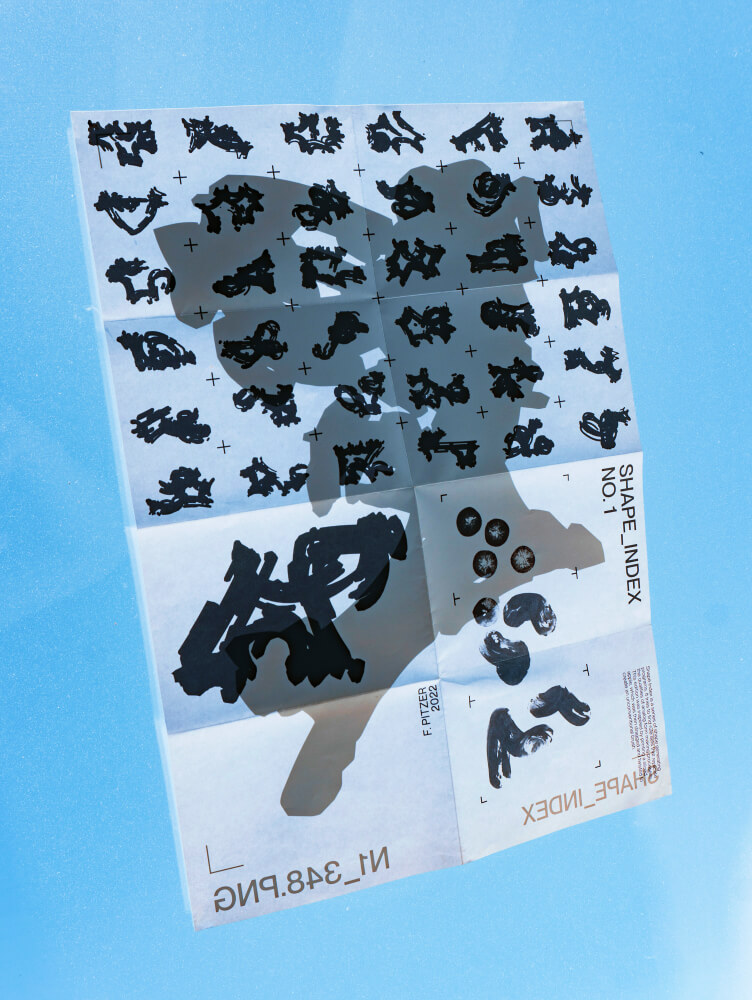
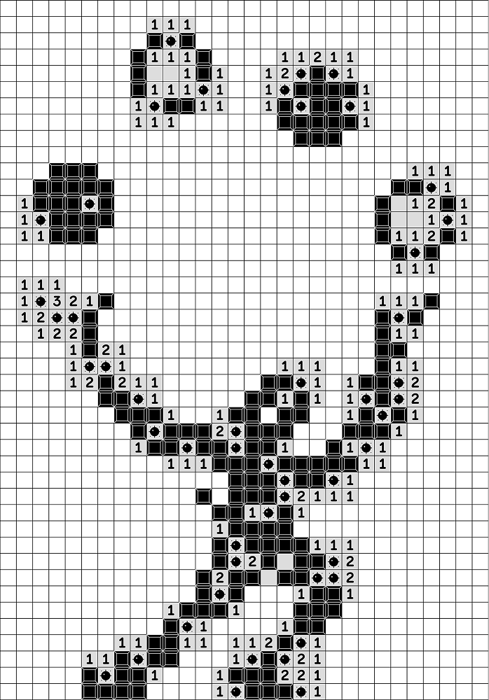

SHAPE INDEX

A collection of three programs that generate shapes within a parametrized system. The graphic language of each is rooted in analog experiments, like using an apple as a brush, ripping paper or dripping paint.
Iterating on the set of rules ensured qualities found in shapes drawn by hand, such as a balanced composition and detailed textures.
Due to their coded nature, the outputs can be static, but also animated on the fly, and allow exploring how paremeters like jaggedness or level of detail influence a family of shapes.
Such systems can be applied as ever changing assets in a flexible identity or inspire a curatorial approach, choosing the best outputs to become permament marks.

FABIGAN
A generative adversarial network (GAN) trained to generate my own face. To create the dataset I wrote a script that extracted my face from over 1400 photos from my childhood.
In the process of transfer learning, non-existent faces were altered to my likeness, distilling my past into a .pkl file.

Wearing it as a mask, the model morphs between my past states. It uses accelerometer data to map movements from the real world onto the latent space of the neural network.
The work plays on themes of anonymity, digital alter egos and dreams of becoming one with the machine in the age of AI.

WYSIWYG?
Large language models generate code from natural language. The ability to describe visual processes with specificity becomes essential for creating graphics that are difficult to realize and even conceive within the constraints of conventional tools.

At the same time, relying on a technology with uncertain and far-reaching implications calls for critical evaluation of its contribution to design.
The thesis examines the role of computation in communicating ideas visually and offers a tool for graphic designers to use language-driven interfaces more deliberately.
NOTWORLDMUSIC
World music as a term for non-Western music was established in the 1980s. As a marketing term it stands for exoticism and Eurocentric thinking.
Further, the leading digital platforms today use algorithms known for biases and filter bubbles to determine what should be consumed. Discovering new music becomes a passive experience where minorities stay under the radar.

For Not World Music, I scraped user ratings to determine outstanding albums from every country. This diverse collection can be explored freely on a Three.js based globe. The minimalist interface was connected to a streaming API for convenient but decelerated listening, allowing users to expand their musical horizon.
OUR VULNERABLE WORLD

Investigating Nick Bostrom's Vulnerable World Hypothesis. Bostrom likens technological progress to drawing balls from an urn. While white balls are beneficial, drawing a black ball ends civilization.

A custom built drawing tool allowed Silvana Aponte to visualize this in a game of Minesweeper, where players cautiously uncover squares, hoping to avoid the fatal bombs.
The result is a mischievous take on a future where acceleration of technology is pursued at all costs.
FREUNDCHEN!
One line of context — medium, year, role.

Second short line — client, tools, or scope.